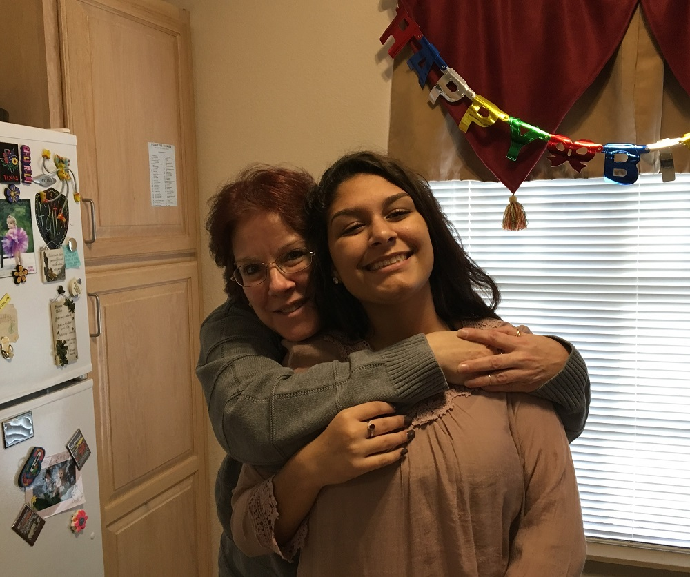

Maddie and me
EXPERIENCE
Midland Loan Services
Complex Loans Analyst
-
Allocated monthly loan waterfall payment on portfolio of 75-100 business loans
- Assist Borrowers by providing information, answering questions, and/or resolve issues of concern
- Interact with multiple departments within Midland in varied capacities
Lowe's
Front End Customer Service Representative (part-time)
- Worked registers in multiple departments of store, with various types of merchandise
- Processed sales and returns for customers on a prompt and accurate basis
Veritas-HHS, LLC
Child Support Enforcement Case Manager
- Reviewed load of over 1,100 cases to determine next best steps needed to collect in arrears child support
- Worked with custodial and non-custodial parents regarding questions/actions on their cases
Kansas University Physicians, Inc.
Patient Services Representative
- Greeted and registered incoming patients for Dermatology appointments; assisted with same for two additional departments
- Confirmed documentation required for doctor and/or legal needs completed
EDUCATION
- Modern Application Development certificate - University of Central Missouri
- Lean Six Sigma Green Belt certificate - Johnson County Community College
- Master of Arts - Interdisciplinary Studies - University of Texas at Dallas
- Bachelor of Science - Business Administration - University of Texas at Dallas
SKILLS
- HTML
- CSS
- JavaScript
- React Native
- Git
OUTSIDE ACTIVITIES
Volunteer Tutor at Literacy KC
Facilitator of services at church
Past President and current Secretary/Treasurer of Northern Nights Toastmasters
{kind=link}